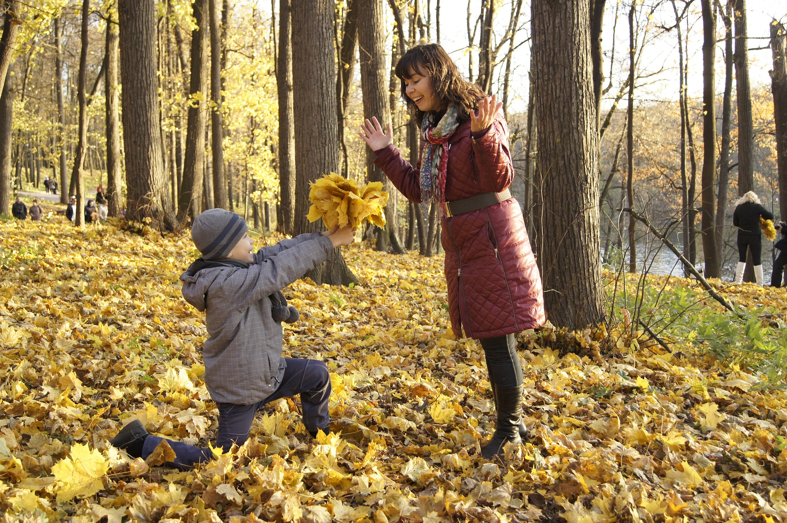

Un partenariat inattendu…
Zeendoc est une entreprise corse gérée par la société Sages qui existe depuis 2000. Pour leurs 20 ans d’anniversaire, ils ont choisi de s’associer à EcoTree et ainsi, de planter un arbre par jour.
Eh bien, c’est le défi que s’est lancé Zeendoc, une application/logiciel de gestion de documents !
Zeendoc est une entreprise corse gérée par la société Sages qui existe depuis 2000. Pour leurs 20 ans d’anniversaire, ils ont choisi de s’associer à EcoTree et ainsi, de planter un arbre par jour.
Leur activité consiste à gérer des documents de manière automatisée ce qui permet donc aux entreprises de gagner du temps. Ils se considèrent comme une entreprise green car tout est fait en ligne, ils n’utilisent donc pas de papier.
C’est le fondateur de Zeendoc Charly Delsol qui a voulu prendre l’initiative d’une démarche green.
Comme tout Corse, c’est un homme qui est très attaché à sa terre, explique Laurence Desoulière, directrice marketing de l’entreprise, et il voulait quelque chose de palpable et de tangible : des arbres. Nous avons cherché comment investir dans des forêts en Corse, mais il y existe très peu d’initiatives environnementales. Il y a toutefois des choses à faire dans la gestion forestière, notamment pour éviter les incendies.
Le souhait de Zeendoc est que leurs clients aient confiance en eux. En effet, c’est tout de même leurs données personnelles qu’ils ont entre leurs mains, alors le groupe a pour but est de montrer à leurs clients qu’ils ont raison de leur faire confiance. Ils souhaitent également travailler avec des partenaires français, et montrer qu’ils agissent pour la planète et pas seulement pour eux-mêmes.
Dans l'actualité d'EcoTree, il y a également Margaud, étudiante à AgroParisTech afin de devenir ingénieur forestier, qui nous donne ses conseils pour faire nos meilleures sorties en forêt. En effet, en automne les paysages forestiers sont très beaux avec leurs couleurs vives et changeantes, ainsi que les feuilles mortes qui se craquent sous nos pas. On ne voudrait pas rater ça !
Tout d'abord, comme vous l'avez sûrement remarqué, je trouve cela très apaisant, de se promener dans la nature. Il ne faut pas négliger les beaux paysages que nous avons la chance d'avoir en France, mais plutôt les découvrir!
Outre le fait que les paysages sont super sympas à voir, on tient à rappeler que les sorties en forêt peuvent être très éducatives pour les enfants et cela peut leur inculquer des valeurs importantes telle que le respect de la nature. Ne pas laisser les emballages par terre après avoir mangé son goûter par exemple !

Margaud explique que pour voir cela, il ne faut pas se rendre en forêt en pleine journée, il faut également être silencieux. C'est surtout au petit matin et à la tombée du jour qu'on a des chances d'en voir le plus. Elle raconte qu'il lui est déjà arrivé de voir une biche avec ses deux petits à seulement quelques mètres d'elle !